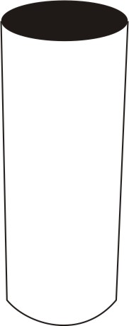
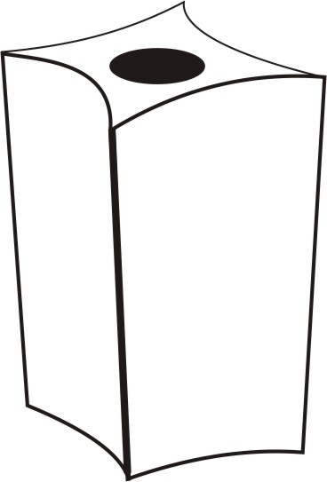
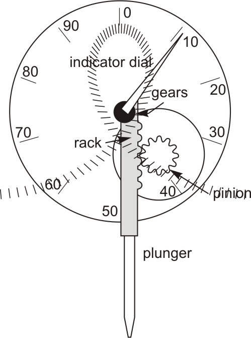
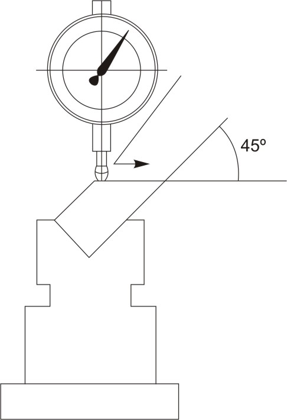
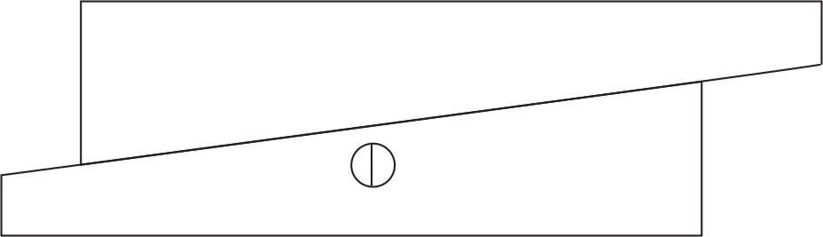

The cylindrical square is a simple tool for checking squareness of two planes or a plane and an edge. The direct reading cylindrical square indicates "out-of-squareness" of work in units of 0.0002" without transfer tools. The cylindrical square and the workpiece are placed on a surface plate, with the angular end down and the base of the cylinder in contact with the part to be checked, the square is rotated until light is shut out. Reading up the topmost dotted curve in contact with the part.

Figure 1: Direct Reading Cylindrical squareThe universal master square is a high-precision square that can be used in any position. The combination of two broad sides and two knife edged sides make it suitable for many applications.

Figure 2: Universal Master SquareA dial indicator is a gauge used to measure very small distances. It is used to measure slight movement of a part, centering workpieces to machine tool spindles, offsetting lathe tailstocks, aligning a vise on a milling machine, checking dimensions. We also use it to measure the distortion of a part. The measurement is shown by a pointer on the face of the gauge. It converts a linear displacement into a radial movement to measure over a small range of movement for the plunger.
The most common type of dial indicator uses a small rod called a plunger. The plunger is connected to the pointer by a gear built into the instrument. Movement of the plunger is shown by movement of the pointer on the dial face. Because of the gearing inside the dial, movement of the pointer is greatly increased. This allows one to see these small measurements with the naked eye. The scale on the metric dial indicator face is divided into 100 divisions. Each division represents 1/100th millimeter.

Figure 3: Dial Indicator; Indicator is moved along the faceThis is a useful tool, especially for measuring slots or keyways. Adjustable parallels consist of two pieces each one is wedge-shaped. They are assembled with a dovetail joint so that as one piece is moved against the other, the outside edges remain parallel, but the unit will increase or decrease in size. Adjustable parallels have a screw that can be tightened to hold the position that you have set.

Figure 4: Using adjustable parallel
Figure 5: Measuring a slot using an adjustable parallel and a micrometer| ← Tutorial 8 | Tutorial 10 → |